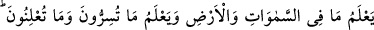
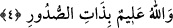

tecellî etti. Bu nedenle Yüce Allah bu âyette, “Sûretlerinizi de güzel yaptı” buyuruyor.
Bu şu demektir: Allah sizin sûretlerinizi bütün mazhariyetlerin birliğinin tecellî ettiği
odak nokta kıldı. Bu “mazhariyet”ler, tüm semavi ve ulvi mezâhirle ve yeryüzüne âid
süfli mezâhiri bir arada toplar. Nitekim Peygamber (s.a.) şöyle buyurur: “Allah Âdem’i
kendi biçiminde yaratmıştır.”[158] Yâni Peygamber (s.a.) bu hadis-i şerifte yaratmanın
her çeşidini ifâde eden halk ismini getirmiştir. Bununla yukarda sözünü ettiğimiz
cem’iyyete işâret etmiştir. Şu halde insanın âkıbeti ve dönüp varacağı nokta bütün
hüviyetleri kendinde toplayan hüviyettir. Fakat insanın fertleri arasında tecellî etme ve
etmeme açısından fiil ve kuvvet yönünden farklılıklar vardır. Şu halde hicab
ehlinin/gönlünde Hakk’ın tecellîsine mâni olan kimsenin, keşf ehlinin/madde âleminin
ötesinde gayb âlemiyle ilgili hususlara vâkıf olan kimsenin kemalâtını iddiâ etmesi
mümkün değildir. Çünkü zikrettiğimiz farklılık vardır. Varlığının toprağında gaib olan
ilâhî hazinenin gömülü bulunduğundan habersiz insana hayretler olsun! Oysa bu hazineyi
elde eden asla fakir olmaz, bir insan özü elde etme imkânı varken kabukla nasıl olur da
yetinir? Zirveye kolayca çıkma imkânı varken nasıl olur da çukurda durup kalır?
Bu şehirde öyle gönül çelici şekerler var ki;
Tarîkat doğanları bile sinek mertebesine kanâat ettiler.
4. Göklerde ve yerde olanları bilir. Sır olarak söylediklerinizi ve açığa
vurduklarınızı da bilir. Allah kalplerde olanı bilendir.
“Göklerde ve yerde olanları” yâni küllî ve cüz’î olan her şeyi, açık ve kapalı
durumları bilir. Allah kendi aranızda gizlediğiniz şeyleri ve açığa vurduğunuz şeyleri
bilir. Âyetin başında geçen “göklerde ve yerde olanları bilir” ifâdesi “kendi aranızda
gizlediğiniz şeyleri de açığa vurduğunuz şeyleri de bilir” ifâdesine şâmil olduğu halde
ayrıca zikredilmiş olması, cezâ ve mükâfatın bunlar üstüne gerçekleşeceği içindir. Bu
âyet-i kerimede hem vaadin hem de tehdidin vurgusu ve iyice pekiştirilmesi vardır.
Burhânu’l-Kur’an’da denir ki: Sûrenin başında geçen “göklerde ve yerde” ifâdesinin
dördüncü âyette tekrar edilmesi yeryüzündekilerle göklerdekilerin tesbihlerinin,
kesrette/çoklukta, kıllette/azlıkta, mâsiyet ve itâata yakınlık ve uzaklıkta farklı farklı
olmalarına bağlı olarak tesbihlerinin farklı olmasındandır.
“Açığa vurduklarınız ve gizlice söyledikleriniz” de aynen böyle farklı farklıdır.
Çünkü açığa vurulanla gizlice söylenen şey birbirinin zıddıdır. Ancak bu âyette “gökler
de olanla yerde olan” ifâdesi tekrar edilmemiştir. Çünkü hiçbiri Yüce Allah’ın ilmi
açısından farklı değildir. Bir tek cinstir. Ona hiçbir şey gizli kalmaz.